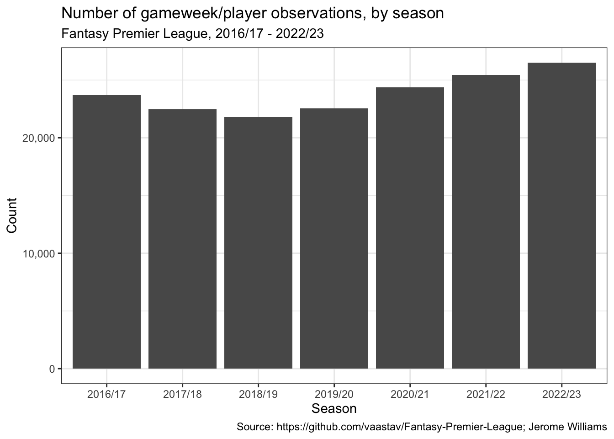
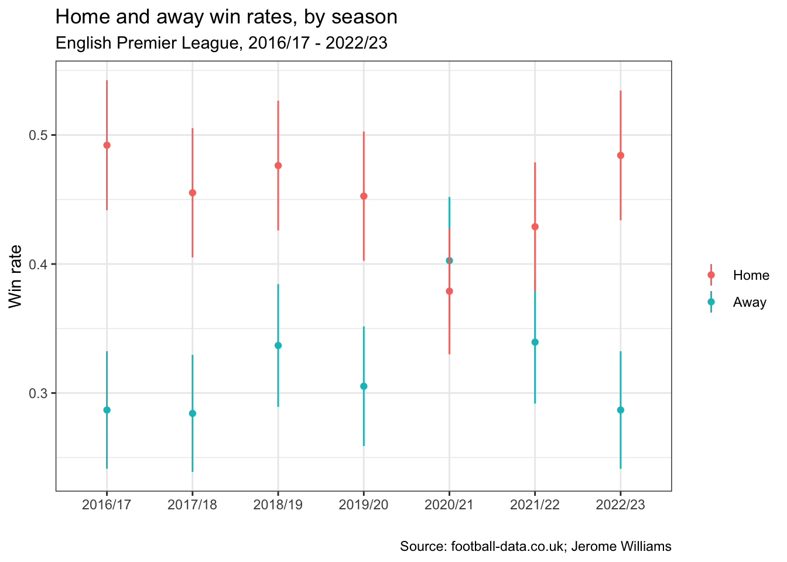

── Attaching packages ─────────────────────────────────────── tidyverse 1.3.2 ──
✔ ggplot2 3.4.1 ✔ purrr 1.0.2
✔ tibble 3.1.8 ✔ dplyr 1.0.10
✔ tidyr 1.3.0 ✔ stringr 1.5.0
✔ readr 2.1.3 ✔ forcats 0.5.2
── Conflicts ────────────────────────────────────────── tidyverse_conflicts() ──
✖ dplyr::filter() masks stats::filter()
✖ dplyr::lag() masks stats::lag()Home Advantage in Fantasy Premier League
Data
Fantasy Premier League data
We will use data from the Fantasy Premier League data project, which I have downloaded separately. The data is stored season by season, so we first combine. For each season, we have to merge gameweek data (in merged_gw.csv) with player information (in players_raw.csv)
fpl_data_path <- 'data/Fantasy-Premier-League-master/data/'
load_and_merge_player_and_gameweek_data <- function(season_str) {
season_string_dash <- str_replace(season_str, '/', '-')
merged_gw <- read_csv(paste0(fpl_data_path, season_string_dash, '/gws/merged_gw.csv'),
show_col_types = FALSE) %>% mutate(season = season_str)
players_raw <- read_csv(paste0(fpl_data_path, season_string_dash, '/players_raw.csv'),
show_col_types = FALSE)
player_position_data <- players_raw %>% select(id, element_type)
gameweek_data <- merged_gw %>%
left_join(player_position_data, by = c('element' = 'id')) %>%
mutate(position = case_when(element_type == 1 ~ 'GK',
element_type == 2 ~ 'DEF',
element_type == 3 ~ 'MID',
element_type == 4 ~ 'FWD')
)
}
load_gameweek_data <- function(season_str) {
season_string_dash <- str_replace(season_str, '/', '-')
merged_gw <- read_csv(paste0(fpl_data_path, season_string_dash, '/gws/merged_gw.csv'),
show_col_types = FALSE) %>% mutate(season = season_str) %>%
mutate(position = if_else(position == 'GKP', 'GK', position))
}
seasons <- list()
seasons[['2016/17']] <- load_and_merge_player_and_gameweek_data(season_str = '2016/17')
seasons[['2017/18']] <- load_and_merge_player_and_gameweek_data(season_str = '2017/18')
seasons[['2018/19']] <- load_and_merge_player_and_gameweek_data(season_str = '2018/19')
seasons[['2019/20']] <- load_and_merge_player_and_gameweek_data(season_str = '2019/20')
seasons[['2020/21']] <- load_gameweek_data(season_str = '2020/21')
seasons[['2021/22']] <- load_gameweek_data(season_str = '2021/22')
seasons[['2022/23']] <- load_gameweek_data(season_str = '2022/23')
gw <- bind_rows(seasons)
print(nrow(gw))[1] 166813We have 166,813 observations (player/gameweek pairs).
Let’s ensure we have position data for all observations.
any_without_position_data <- gw$position %>% is.na() %>% any()
print(any_without_position_data)[1] FALSEAs a check, let’s plot the number of observations per season.
ggplot(gw) +
geom_bar(aes(x = season)) +
scale_y_continuous(labels = scales::number_format(big.mark = ",")) +
theme_bw() +
labs(title = 'Number of gameweek/player observations, by season',
subtitle = 'Fantasy Premier League, 2016/17 - 2022/23',
x = 'Season',
y = 'Count',
caption = source_string)
Let’s also check the number of distinct gameweeks per season. We should have 38 gameweeks per season.
by_season <- gw %>% group_by(season) %>% summarize(n_gameweeks = n_distinct(GW))
ggplot(by_season) + geom_col(aes(x = season, y = n_gameweeks)) +
theme_bw() +
labs(
title = 'Gameweeks per season',
subtitle = 'Fantasy Premier League, 2016/17 - 2022/23',
x = 'Season',
y = 'Number of gameweeks',
caption = source_string
)
Team level data from football-data.co.uk
Our FPL data does not have team-level results for every season we are interested in, so we’ll also use data from <www.football-data.co.uk>. Let’s load this data as well.
fd_data_path <- 'data/footballdata_co_uk/';
load_fd_data <- function(season_string) {
season_no_slash <- str_replace(season_string, '/', '') %>% str_replace('20', '')
season <- read_csv(
paste0(fd_data_path, 'E0_', season_no_slash, '.csv'),
show_col_types = FALSE
) %>%
mutate(season = season_string)
}
season_strings <- c('2016/17',
'2017/18',
'2018/19',
'2019/20',
'2020/21',
'2021/22',
'2022/23')
fd <- lmap(season_strings, load_fd_data) %>%
bind_rows()Team-level home advantage
Before we consider home advantage in FPL points for individual players, let’s confirm that we see home advantage in team-level outcomes. Specifically, let’s plot win rate and goals scored for teams playing at home and teams playing away.
We will use the <football-data.co.uk> dataset for this. Because the data has a single row for each match (with e.g. home goals and away goals stored in separate fields), let’s reshape so that we have a single row for each match-team observation.
fd_home <- fd %>% select(season,
date = Date,
team = HomeTeam,
opponent = AwayTeam,
goals_scored = FTHG, # full time home goals
goals_conceded = FTAG, # full time away goals
FTR) %>%
mutate(home_away = 'Home',
result = case_when(FTR == 'H' ~ 'W', # full time result
FTR == 'A' ~ 'L',
FTR == 'D' ~ 'D'),
win = (result == 'W'))
fd_away <- fd %>% select(season,
date = Date,
team = AwayTeam,
opponent = HomeTeam,
goals_scored = FTAG,
goals_conceded = FTHG,
FTR) %>%
mutate(home_away = 'Away',
result = case_when(FTR == 'H' ~ 'L',
FTR == 'A' ~ 'W',
FTR == 'D' ~ 'D'),
win = (result == 'W'))
fd2 <- bind_rows(fd_home, fd_away)
# home_away <- bind_rows(home, away) %>% filter(!is.na(win))Team-level home advantage in win rate
Now that we’ve have created our home/away dataset, let’s plot the mean win rate, by season and by home/away.
win_rate_stats <- fd2 %>%
group_by(season, home_away) %>%
summarize(mean = mean(win),
se = std.error(win),
n = n()) %>%
mutate(home_away = fct_relevel(home_away, 'Home', 'Away'))`summarise()` has grouped output by 'season'. You can override using the
`.groups` argument.ggplot(win_rate_stats, aes(x = season, color = home_away)) +
geom_point(aes(y = mean)) +
geom_linerange(aes(ymin = mean - 1.96 * se,
ymax = mean + 1.96 * se)) +
theme_bw() +
labs(
title = 'Home and away win rates, by season',
subtitle = 'English Premier League, 2016/17 - 2022/23',
color = '',
x = '',
y = 'Win rate',
caption = 'Source: football-data.co.uk; Jerome Williams'
)
Interestingly, we see that home advantage disappeared completely in the 2020/21 season. The 2020/21 was played “behind closed doors,” i.e., without supporters in stadiums, because of the COVID-19 pandemic. It is well documented that the behind-closed-doors season resulted in diminished home advantage. Indeed, this natural experiment has provided insight into the sources of home advantage ….
Home advantage is also smaller in the 2021/22 season, when a limited numbers of supporters began to be allowed back into stadiums.
Apart from 2020/21 and 2021/22, home advantage in other seasons is pronounced and fairly consistent. Home win rates tend to be between 0.45 to 0.5, while away win rates are between 0.28 or so and 0.35.
Team-level home advantage in goals scored
Let’s check whether home advantage also shows up in goals scored. It should, given the likely high correlation between goals scored and win rate.
win_rate_stats <- fd2 %>%
group_by(season, home_away) %>%
summarize(mean = mean(goals_scored),
se = std.error(goals_scored),
n = n()) %>%
mutate(home_away = fct_relevel(home_away, 'Home', 'Away'))`summarise()` has grouped output by 'season'. You can override using the
`.groups` argument.ggplot(win_rate_stats, aes(x = season, color = home_away)) +
geom_point(aes(y = mean)) +
geom_linerange(aes(ymin = mean - 1.96 * se,
ymax = mean + 1.96 * se)) +
theme_bw() +
labs(
title = 'Home and away goals scored, by season',
subtitle = 'English Premier League, 2016/17 - 2022/23',
color = '',
x = '',
y = 'Goals scored',
caption = 'Source: football-data.co.uk; Jerome Williams'
)
Indeed, we see a similar home advantage in goals scored with the effect disappearing in 2020/21 and smaller in 2021/22. Outside of those two seasons, home teams tend to score 1.5-1.6 goals, on average, while away teams tend to score 1.15-1.25 goals, on average.